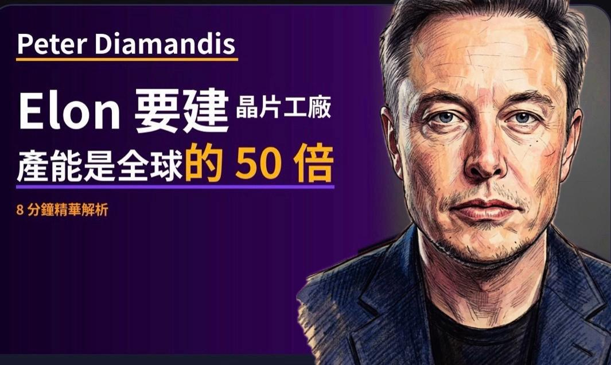
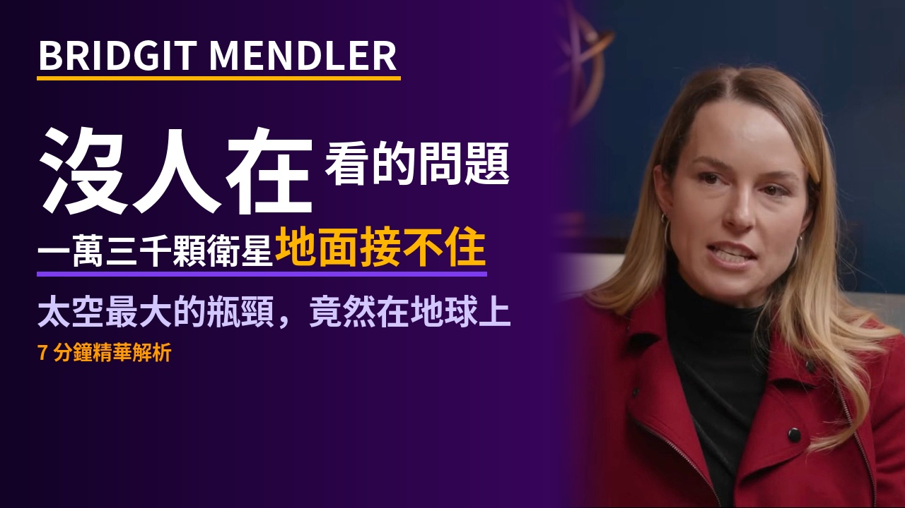
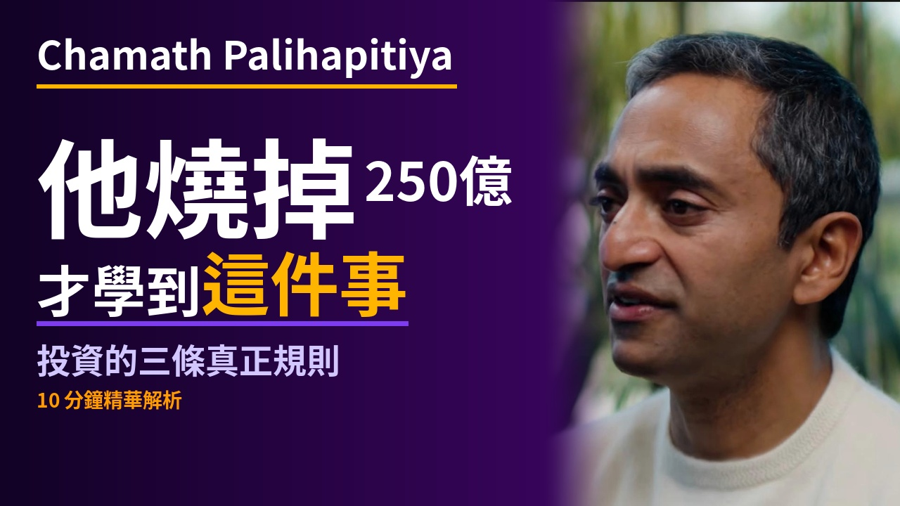
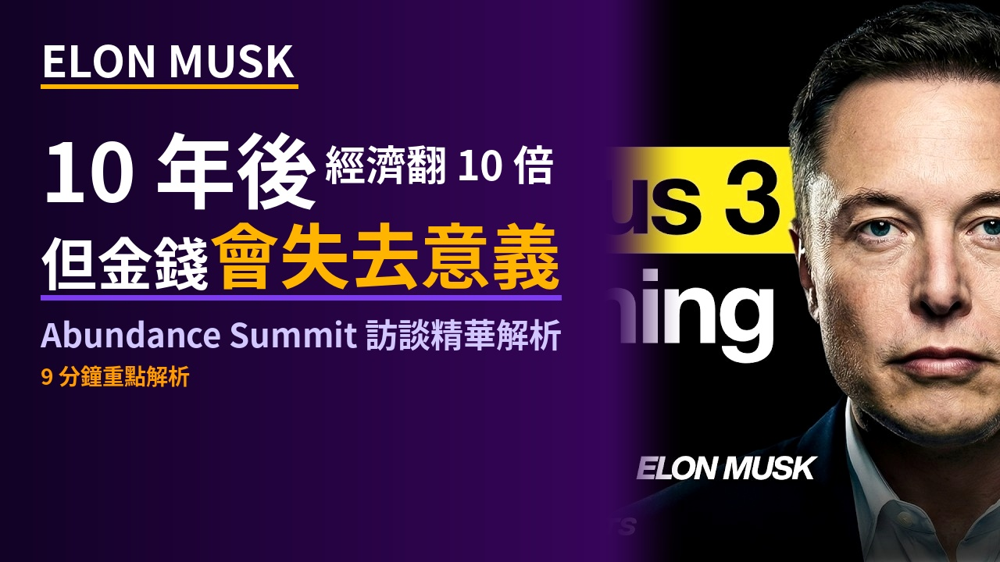

伊朗戰爭衝擊你的錢包：7個步驟現在就能做
油價 3 週漲 40%——霍爾木茲效應、停滯性通膨、7 個自保步驟，江學勤教授帶你搞懂這條打到你退休帳戶的連結線。
霍爾木茲人民幣收費站：江學勤教授解析美元體系50年最大挑戰｜94iVoice
伊朗油輪只收人民幣——石油美元協議 50 年、三波衝擊傳導、美國的蘇伊士時刻、去美元化數字正在說話。
以色列為何不要停火？川普和談被誰搞砸
江學勤教授分析：消耗戰、以色列如何一次次破壞川普和談、美國困在中間走不掉、西方丟掉柏拉圖的代價。
94iVoice｜Block裁員40%背後，AI真的取代工程師了嗎？
Block業務負責人Owen Jennings親自說明：為何AI讓裁員百分之四十成為必然，以及AI如何從根本上改變公司的建構方式。

94iVoice｜AI 越強，人類剩下的才是核心｜David Shapiro
AI 加速到底代表什麼？David Shapiro 談 AGI 後的人類角色、意識、工作意義，以及如何在浪潮中找到定位。

Anthropic vs 國防部：AI 與威權的邊界
當AI公司拒絕替軍方服務，威權主義的過剩危機正在浮現。民主 vs 威權的AI軍備競賽。

Elon 要建全球最大晶片工廠，人類開車將變非法，AI 正在改寫職場規則
Peter Diamandis 拆解三件改變世界的事：TeraFab 超級晶片廠、自駕車革命、AI 大洗牌。
美國比特幣新計畫：CFTC 主席揭露 AI、預測市場與永續合約
Brian Quintenz — 從 2011 年就在玩比特幣的監管者，談美國加密監管大轉彎、永續合約即將合法、AI 代理交易員。

停止買黃金：鈾礦的上漲空間更大
Rick Rule × Justin Hume — 霍爾木茲效應、主權國家囤鈾、Sprott飛輪效應，深度訪談鈾礦投資論點。

迪士尼演員去做太空公司
Bridgit Mendler × Northwood Space — 衛星地面基礎設施革命。迪士尼演員 → MIT 博士 → 太空基礎設施 CEO

Chamath Palihapitiya的投資教訓：如何避免燒掉250億
Chamath 分享他從一無所有到億萬富翁的投資心法——風險承受、長期思維、與矽谷的愛恨情仇。

S&P 500 還能存？因為AI浪潮 這位投資達人悄悄調整了三件事
Mark Tilbury 的投資策略大調整：百分之四十集中風險、全球分散 VWRP、黃金升格一級資產、巴菲特囤現金 3,730 億。

Palantir 的怪胎哲學：Alex Karp 如何用 AI 重寫戰爭規則
二十年的「怪胎秀」如何把資料骨架變成戰場 OS：AI 自動決策、矽谷與軍方的和解、美國真正的護城河。

94iVoice｜AI來了，教育的意義還在嗎？發掘未來的關鍵！
IBM 資安專家 Jeff Crume 談 AI 時代的學習革命：記憶 vs 理解、人類老師的不可取代性、未來教育的核心。

AI駭客大軍已啟動？這三件事讓我睡不著
Dr. Waku 解析三大威脅：AI 全自動攻擊企業、自動製造漏洞、全世界都沒準備好。

AI時代，你唯一的護城河是「你自己」
後AI高收入技能組合：主動性→品味→視角→說服力→技術工具。換人測試揭示你的不可取代性。

AI吸血鬼效應：正在改變你的工作與生活？
AI不只搶走工作，還在吸走意義。Stack Overflow、新聞媒體、職場人士都難逃吸血鬼效應。

Elon Musk：10年後經濟翻10倍，但金錢會失去意義
Abundance Summit 訪談精華。AI讓生產力爆炸，但我們準備好了嗎？9分鐘深度解析。